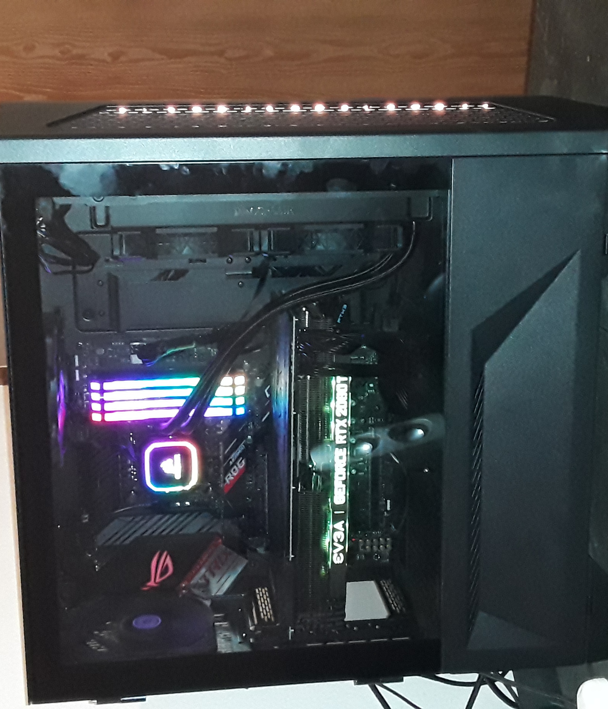
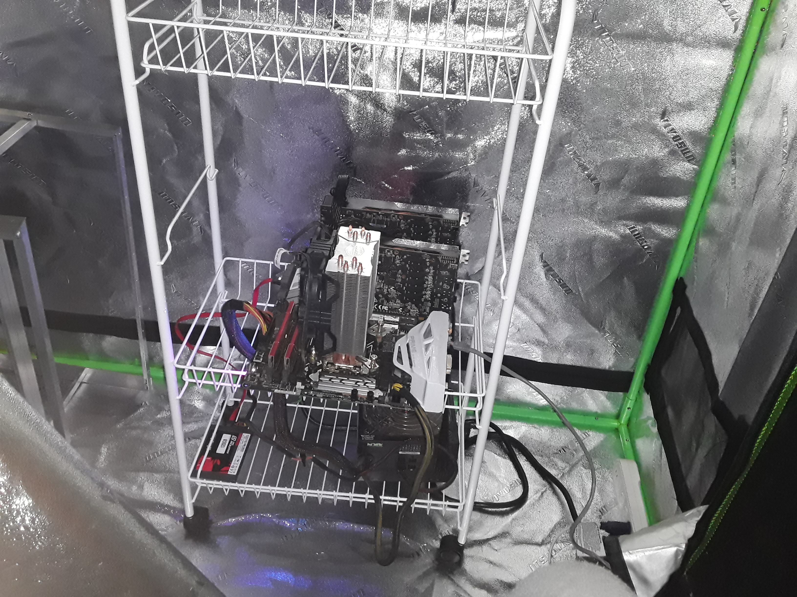

Hello! My name is Daniel I'm 29 years old, active duty in the military and attend South Western College for my degree in Computer Programming. I work in the Space career field in the military so my expertise when it comes to computers is quite extensive. One of my greatest hobbies and the entire theme of this website is computers. My hobby in computers started with an IBM computer I spent a ton of time on playing Diablo II and Civilization Call to Power and messing around with HTML elements on Myspace. All this was accomplished on the excruciating speed of dial-up internet assuming my Mom wasn’t on the phone! I have since “refined” my hobbies to building every computer I own (all four of them!) and utilize my skill in my crypto currency business. I also code to accomplish certain effects (like this website!) and look forward to expanding upon this site as time continues!
The following links are links I use for my endevours.
PC Part Picker What To Mine New EggThe following images are my intial crypt build (it was my literal first build) and my current PC build!
 